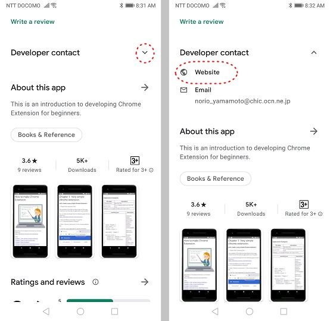

How to make Chrome Extension.
See below for the latest information on Chrome Extension.
https://developer.chrome.com/docs/extensions/
Index
Chapter 1. Very simple chrome extension.
Chapter 2. How to use localStorage.
Chapter 3. How to Debug.
Chapter 4. Browser Action and Page Action.
Chapter 5. How to use executeScript.
Chapter 6. How to use contextMenus.
Chapter 7. Control chrome tabs.
Chapter 8. How to use sendMessage.
Chapter 9. How to use Alarm.
Chapter 10. How to use content scripts.
Chapter 11. Open file and Sava to file.
To be continued.
The programs described in this manual can be downloaded from my website.
You can access my website from this app page on Google Play.
https://play.google.com/store/apps/details?id=jp.co.yamamoto.norio.howtomakechromeextension2
